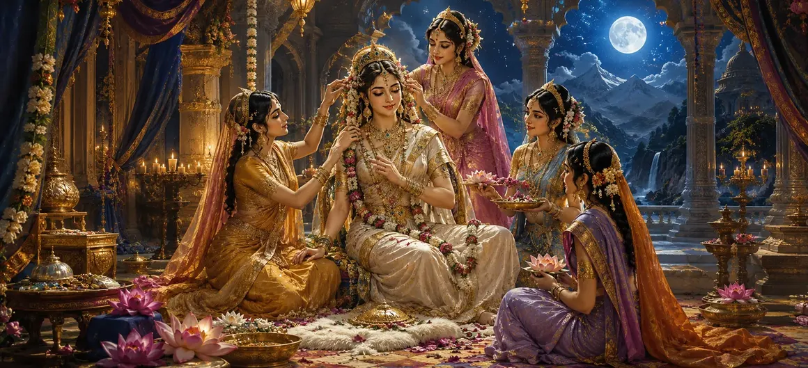

गौरी का श्रृंगार
वायवीय संहिता का सत्ताईसवाँ अध्याय देवी पार्वती के उत्तम दिव्य श्रृंगार का वर्णन करता है।
ऋषि वायु बताते हैं कि कैसे स्वर्गीय माताओं और दिव्य युवतियों ने देवी को दीप्तिमान गहनों और पवित्र वस्त्रों से प्यार से सजाया।
यह अध्याय ब्रह्मांड की माँ की सर्वोच्च सुंदरता, महिमा और दिव्य कृपा का जश्न मनाता है।
अध्याय 27 की मुख्य बातें
दिव्य रत्न
देवी पार्वती की शोभा बढ़ाने वाले चमकते रत्नों और आभूषणों को चित्रित करता है।
दिव्य पोशाक
स्वर्गीय हाथों से बुने गए पवित्र, सुगंधित वस्त्रों का वर्णन करता है।
आनंददायक सेवा
इसमें दिव्य युवतियों को उसकी भव्य तैयारियों में भाग लेते हुए दिखाया गया है।
दीप्तिमान महामहिम
मिलन के लिए तैयार देवी के सर्वोच्च वैभव को दर्शाता है।
शुभ आभा
दिव्य सभा को अनुग्रह, उत्सव और आश्चर्य से भर देता है।
कथा प्रवाह
अध्याय 28 में पवित्र राख की महिमा की खोज के लिए मार्ग तैयार करता है।
इस अध्याय में मुख्य विषय
दिव्य शृंगार की तैयारी
ऋषि वायु ने वर्णन किया कि देवी के अलंकरण की तैयारी शुरू होते ही वातावरण हर्षोल्लास से भर गया।
प्रत्येक दिव्य प्राणी देवी गौरी के सबसे राजसी शाही रूप में परिवर्तन को देखने के लिए एकत्र हुए।
दिव्य युवतियों और माताओं की भूमिका
दिव्य माताओं और दिव्य सेवकों ने प्रेमपूर्वक देवी को स्नान, अभिषेक और वस्त्र पहनाने का कार्यभार संभाला।
ब्रह्मांड की सर्वोच्च माता की सेवा करते हुए उनके हृदय भक्ति से भर गए।
चमकदार आभूषणों से सौंदर्यीकरण
देवी पार्वती अमूल्य हार, झुमके, चूड़ियाँ और दिव्य रत्नों से जड़ित मुकुट से सुशोभित थीं।
प्रत्येक आभूषण ने उसके प्राकृतिक उज्ज्वल रंग को बढ़ाया, जिससे वह हजारों सूर्यों की तरह चमकने लगी।
शुभ दिव्य पोशाक धारण करना
वह दिव्य सुगंध और शुभ रंगों से युक्त उत्तम, दोषरहित रेशम से लिपटी हुई थी।
यह पोशाक पवित्रता, समृद्धि और भगवान शिव के साथ पवित्र मिलन के लिए उसकी तत्परता का प्रतीक थी।
गौरी के आभूषणों का प्रतीकात्मक महत्व
दार्शनिक रूप से, आभूषण उन विविध ऊर्जाओं और महिमाओं का प्रतिनिधित्व करते हैं जो स्वाभाविक रूप से दिव्य माँ से निकलती हैं।
वे दैवीय कृपा द्वारा कायम सृष्टि की पूर्णता का प्रतीक हैं।
शृंगार प्रसंग का समापन
अध्याय 27 का समापन देवी गौरी के पूर्ण रूप से सुसज्जित होकर खड़े होने, परम कृपा और सुंदरता बिखेरते हुए हुआ।
एकत्रित जनसमूह हाथ जोड़कर मंत्रमुग्ध भक्ति भाव से उसे देखता रहा।
अध्याय 28 की ओर
इस शानदार वर्णन के बाद, ऋषि वायु अध्याय 28, 'पवित्र राख की महिमा' सुनाने की तैयारी करते हैं।
अगला अध्याय भगवान शिव की परंपरा में भस्म के गहन आध्यात्मिक महत्व पर प्रकाश डालता है।
अध्याय 27 की मुख्य शिक्षाएँ
दिव्य वैभव
देवी का श्रृंगार सृष्टि की सर्वोच्च सुंदरता को दर्शाता है।
दीप्तिमान आभूषण
रत्न और जवाहरात दिव्य माँ की दृश्य महिमा को बढ़ाते हैं।
प्राचीन पवित्रता
बढ़िया पोशाक आंतरिक और बाहरी शुभता का प्रतीक है।
समर्पित सेवा
परमात्मा की सेवा करने से दिव्य प्राणियों को परम आनंद मिलता है।
संघ के लिए तत्परता
भव्य दिव्य विवाह के लिए आध्यात्मिक मंच तैयार करता है।
अगले चरण
अध्याय 28 में पवित्र राख की गहन शिक्षाओं की ओर ले जाता है।
आध्यात्मिक चिंतन
गौरी का श्रृंगार हमें याद दिलाता है कि दिव्य आत्मा, जब भक्ति के माध्यम से शुद्ध होती है, स्वाभाविक रूप से गुणों, अनुग्रह और आध्यात्मिक वैभव के अमूल्य रत्नों से सुसज्जित होती है।
अध्याय 27 का संदेश जीना
अपने चरित्र को धैर्य, दया और भक्ति जैसे गुणों से सजाएँ।
आध्यात्मिक अभ्यासों को श्रद्धा और आनंदपूर्ण समर्पण के साथ अपनाएं।
दिव्य स्त्री ऊर्जा की अंतर्निहित सुंदरता और पवित्रता को पहचानें।
प्रमुख आध्यात्मिक अवधारणाएँ
देवी पार्वती का उत्तम दिव्य अलंकरण।
दिव्य रत्नों और रत्नों की चमकती चमक।
शुभ एवं सुगंधित दिव्य पोशाक धारण करना।
दिव्य माँ का पवित्र अभिषेक एवं सौंदर्यीकरण।
शुभ दिव्य मिलन की भव्य तैयारी।
अध्याय 28 में पवित्र राख की महिमा की प्रस्तावना।
अध्याय सारांश
वायवीय संहिता अध्याय 27 गौरी के श्रृंगार को प्रस्तुत करता है। दिव्य रत्नों, दिव्य पोशाक, परिचारिकाओं द्वारा आनंदमय सेवा और प्रतीकात्मक सुंदरता पर प्रकाश डालते हुए, यह अध्याय देवी पार्वती की उज्ज्वल महिमा का जश्न मनाता है। यह अध्याय 28, 'पवित्र राख की महिमा' का मार्ग प्रशस्त करता है।
अक्सर पूछे जाने वाले प्रश्न
1. वायवीय संहिता अध्याय 27 का प्राथमिक विषय क्या है?
अध्याय 27 में भगवान शिव के साथ मिलन की तैयारी के लिए देवी पार्वती के उत्तम दिव्य श्रृंगार और पवित्र अलंकरण का विवरण दिया गया है।
2. देवी पार्वती के श्रृंगार में कौन सहायता करता है या उसका गवाह कौन है?
दिव्य माताएँ, दिव्य दासियाँ और स्वर्गीय परिचारिकाएँ देवी को दिव्य रत्नों और वस्त्रों से सजाने में प्रेमपूर्वक सहायता करती हैं।
3. देवी के आभूषण आध्यात्मिक रूप से किसका प्रतीक हैं?
वे दिव्य स्त्री ऊर्जा में निहित बहुमुखी गुणों, ब्रह्मांडीय शक्तियों और प्राचीन महिमा का प्रतीक हैं।
4. वायवीय संहिता में इस पवित्र अध्याय का वर्णन कौन करता है?
ऋषि वायु वायवीय संहिता की शिक्षाओं के भाग के रूप में एकत्रित ऋषियों को ये पवित्र इतिहास सुनाते हैं।
5. अध्याय 27 के बाद नेविगेशन के लिए अगला अध्याय कौन सा है?
नेविगेशन के लिए अगले अध्याय का शीर्षक 'पवित्र राख की महिमा' है।
"जब दिव्य स्त्रीत्व अपनी पूर्ण महिमा में चमकता है, तो सारी सृष्टि उसकी अद्वितीय कृपा को प्रतिबिंबित करती है।"
वायवीय संहिता के माध्यम से जारी रखें
अध्याय 27 गौरी के श्रृंगार का समापन करता है। पवित्र राख की महिमा जारी रखें।